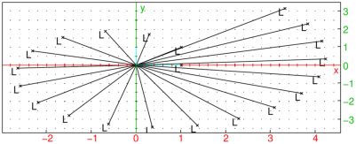

19.4.4 Discrete Fourier Transform and Fast Fourier Transform
For any integer N, the Discrete Fourier Transform (DFT) is a
transformation FN defined on the set of periodic sequences of
period N; it depends on a choice of a primitive nth root of unity
ωN. For sequences with complex coefficients, we take
ωN=e2iπ/N.
If x is a periodic sequence of period N, defined by the vector
x=[x0,x1,… xN−1] then FN(x)=y is a periodic sequence of
period N, defined by:
| (FN(x))k=yk= | | xjωN−k j, k=0,…,N−1.
|
FN is bijective with inverse
| FN−1= | | | | i.e.
(FN,ωN−1(x))k= | | | xjωNk j.
|
The Fast Fourier Transform (FFT) is an efficient way
to compute the discrete Fourier transform; faster than computing each
term individually. Xcas implements the FFT algorithm to
compute the DFT when the period of the sequence is a power of 2.
The fft command computes the discrete Fourier transform.
The ifft command computes the inverse discrete Fourier transform.
Examples
|
| |
| ⎡
⎣ | 2.0,−1.0−i,0.0,−1.0+i | ⎤
⎦ |
| | | | | | | | | | |
|
Properties
Let x and y be two periodic sequences of period N.
-
The Hadamard product (notation ⊙) is defined by
(x⊙ y)k=xk yk.
- The convolution product (notation ∗) is defined by
(x∗ y)k=∑j=0N−1xjyk−j.
The following statements hold:
|
| | FN(x⊙ y) | | = | ⎛
⎜
⎜
⎝ | | ⎞
⎟
⎟
⎠ | FN(x)∗ FN(y), |
| | | | | | | | | |
|
FN(x∗ y) | =FN(x)⊙ FN(y).
| | | | | | | | | |
|
Applications
Value of a polynomial.
Define a polynomial P(x)=∑j=0N−1cjxj by the vector of its
coefficients c:=[c0,c1,…,cN−1], where zeroes may be added so that
N is a power of 2 (so the Fast Fourier Transform can be used).
Let us compute the values of P(x) at
x=ak=ωN−k=e−2ikπ/N, k=0,…,N−1.
This is just the DFT of c since
For example, let P(x+x2) and x=1,i,−1,−i.
Here the coefficients of P are [0,1,1,0],
N=4 and ω=e2iπ/4=i.
|
| |
| ⎡
⎣ | 2.0,−1.0−i,0.0,−1.0+i | ⎤
⎦ |
| | | | | | | | | | |
|
Hence P(1)=2, P(−i)=P(ω−1)=−1−i,
P(−1)=P(ω−2)=0,
P(i)=P(ω−3)=−1+i.
Let us now compute the values of P(x) at
x=bk=ωNk=e2ikπ/N for k=0,…,N−1.
This is the inverse DFT of c since
| P(ak)= | | cj(ωNk)j=NFN−1(c)k.
|
Use this method to find the values of P(x+x2) at x=1,i,−1,−i.
Again, the coefficients of P are [0,1,1,0],
N=4 and ω=e2iπ/4=i.
|
| |
| ⎡
⎣ | 2.0,−1.0+i,0.0,−1.0−i | ⎤
⎦ |
| | | | | | | | | | |
|
Hence P(1)=2, P(i)=P(ω1)=−1+i,
P(−1)=P(ω2)=0, P(−i)=P(ω3)=−1−i.
You find of course the same values as above.
Trigonometric interpolation.
Let f be periodic function of period 2π and let fk=f(2kπ/N)
for k=0,…,N−1. Find a trigonometric polynomial p that interpolates f
at xk=2kπ/N, that is find pj for j=0,…,N−1 such that
Replacing xk by its value in p(x) we get:
In other words, (fk) is the inverse DFT of (pk), hence
If the function f is real, p−k=pk, hence depending
whether N is even or odd:
| p(x)=p0+ 2 Re | ⎛
⎜
⎜
⎝ | | pk eikx | ⎞
⎟
⎟
⎠ |
+Re | ⎛
⎜
⎝ | p | | e | | ⎞
⎟
⎠ |
if N is even and
| p(x)=p0+ 2 Re | ⎛
⎜
⎜
⎝ | | pk eikx | ⎞
⎟
⎟
⎠ |
if N is odd.
As an example, consider the following data which describes how the
temperature at some location changes during the day.
| t (h) | 0 | 3 | 6 | 9 | 12 | 15 | 18 | 21 |
| T (∘C) | 11 | 10 | 17 | 24 | 32 | 26 | 23 | 19 |
Using trigonometric interpolation, predict the temperature at 13:45 h.
Here N=8=2m. The interpolation polynomial is (see also Section 10.2.6):
| p(t)= | | p−m | ⎛
⎜
⎝ | e | | + e | | ⎞
⎟
⎠ | +
| | pk e | |
and
| q:=1/8*fft([11,10,17,24,32,26,23,19]) |
|
| | 20.25,−4.48115530061+1.72227182413 i,0.375+0.875i, | | | | | | | | | |
| | −0.768844699385+0.222271824132, i,0.5, | | | | | | | | | |
| | −0.768844699385−0.222271824132, i, | | | | | | | | | |
| | | 0.375−0.875i, −4.48115530061−1.72227182413i | ⎤
⎦ |
| | | | | | | | | |
|
Therefore:
-
p0=20.25,
- p1=−4.48115530061+1.72227182413i=p−1,
- p2=0.375+0.875i=p−2,
- p3=−0.768844699385+0.222271824132i=p−3,
- p4=0.5.
Indeed,
q=[q0,…,qN−1]=[p0,…,pN/2−1,p−N/2,…,p−1]=1/NFN([y0,…,yN−1])=1/Nfft(y).
| pp:=[q[4],q[5],q[6],q[7],q[0],q[1],q[2],q[3]]:; |
Here, pk=pp[k+4] for k=−4,…,3.
It remains to compute the value of the interpolation polynomial at point
t0=13.75=55/4.
| t0(j):=exp(2*i*pi*(13+3/4)/24*j);
T0:=1/2*pp[0]*(t0(4)+t0(-4))+sum(pp[j+4]*t0(j),j,-3,3);
evalf(re(T0)) |
The temperature is predicted to be equal to 29.49 degrees Celsius.
Using the Lagrange interpolation polynomial (which is not
periodic), we obtain the following prediction:
| l1:=[0,3,6,9,12,15,18,21]:;
l2:=[11,10,17,24,32,26,23,19]:;
subst(lagrange(l1,l2,13+3/4),x=13+3/4):;
evalf(ans()) |
Note, however, that Lagrange polynomial can suffer from large
oscillations and is hence not practical.
Fourier series.
Let f be a periodic function of period 2π and let
yk=f(xk) where xk=2kπ/N for k=0,…,N−1.
Suppose that the Fourier series of f converges to f (this will
be the case if for example f is continuous). If N is large,
a good approximation of f will be given by:
Hence we want a numeric approximation of
The numeric value of the integral ∫02πf(t) e−int dt can be
computed by the trapezoidal rule (note that the Romberg algorithm
would not work here because the Euler-Maclaurin development
has its coefficients equal to zero, since the integrated function is
periodic, hence all its derivatives have the same value at 0 and at 2π).
If cn is the numeric value of cn obtained by the
trapezoidal rule, then
Indeed, since xk=2kπ/N and f(xk)=yk:
Hence [c0,…,cN/2−1,cN/2+1,…,cN−1]=
1/NFN([y0,y1,…,y(N−1)]), since
-
if n≥0, then cn=yn.
- if n<0, then cn=yn+N.
- ωN=e2iπ/N, hence ωNn=ωNn+N.
Several properties are listed below.
-
The coefficients of the trigonometric polynomial that interpolates f
at x=2kπ/N are
- If f is a trigonometric polynomial of degree m≤ N/2, then
The trigonometric polynomial that interpolates f is f itself, the numeric
approximation of the coefficients are in fact exact (cn=cn).
- More generally, you can compute cn−cn.
Suppose that f is equal to its Fourier series, i.e. that:
Then:
| f(xk)=f | ⎛
⎜
⎜
⎝ | | ⎞
⎟
⎟
⎠ | =yk= | | cmωNkm,
cn= | | | ykωN−kn.
|
Replace yk by its value in cn:
If m≠ n (mod N ), ωNm−n is an nth root of unity different
from 1, hence:
Therefore, if m−n is a multiple of N (m=n+l· N) then
∑k=0N−1ωNk(m−n)=N, otherwise
∑k=0N−1ωNk(m−n)=0.
By reversing the two sums, you get
|
| | cn | | | | | | | | | | |
| | | | | | | | | | | |
| | =⋯ + cn−2 N+cn−N+cn+cn+N+cn+2N+⋯
| | | | | | | | | |
|
Conclusion: if |n|<N/2, then cn−cn is a sum of cj
with large indices
(at least N/2 in absolute value), hence is small (depending on the
rate of convergence of the Fourier series).
For example, input:
| f(t):=cos(t)+cos(2*t):;
x:=f(2*k*pi/8)$(k=0..7) |
|
| |
| ⎡
⎣ | 0.0,4.0,4.0,0.0,0.0,0.0,4.0,4.0 | ⎤
⎦ |
| | | | | | | | | | |
|
Dividing by N=8, you get
| c0=0,c1=0.5,c2=0.5,c3=0.0, | |
| c−4=0.0,c−3=0.0,c−2=0.5,c−1=0.5.
| |
|
Hence bk=0 and ak=c−k+ck equals 1 for k=1,2 and 0 otherwise.
Convolution Product.
If P(x)=∑j=0n−1ajxj
and Q(x)=∑j=0m−1bjxj
are given by the vectors of their coefficients
a=[a0,a1,…,an−1] and b=[b0,b1,…,bm−1], you can
compute the product of these two polynomials using the DFT.
The product of polynomials is the convolution product
of the periodic sequence of their coefficients
if the period is greater or equal to
(n+m). Therefore we complete a (resp. b) with m+p
(resp. n+p) zeros, where
p is chosen such that N=n+m+p is a power of 2.
If a=[a0,a1,…,an−1,0,…,0] and
b=[b0,b1,…,bm−1,0,…,0], then:
If you know FN(a) and FN(b), then a∗ b=FN−1(FN(a)⊙ FN(b))
(see above).
Noise removal with spectral subtraction.
We use Xcas to implement a simple algorithm for static
noise removal based on the spectral subtraction method1.
The efficiency of the spectral subtraction method largely depends on
a good noise spectrum estimate. Below is the code for a function
noiseprof that takes data and wlen as its
arguments. These are, respectively, a signal chunk containing only
noise and the window length for signal segmentation (the best values
are powers of two, such as 256, 512 or 1024). The function returns an
estimate of the noise power spectrum obtained by averaging the power
spectra of a (not too large) number of distinct chunks of
data of length wlen. The Hamming window is
applied prior to FFT.
| noiseprof(data,wlen):={
local N,h,dx,x,v,cnt;
N:=length(data);
h:=wlen/2;
dx:=min(h,max(1,(N-wlen)/100));
v:=[0$wlen];
cnt:=0;
for (x:=h;x<N-h;x+=dx) {
v+=abs(fft(hamming_window(data,floor(x)-h,wlen))).^2;
cnt++;
};
return 1.0/cnt*v;
}:; |
The main function is noisered, which takes three arguments:
the input signal data, the noise power spectrum np
and the “spectral floor” parameter beta (β, the minimum
power level). The function performs subtraction of the noise spectrum
in chunks of length wlen (the length of list np)
using the overlap-and-add approach with the Hamming window function2.
| noisered(data,np,beta):={
local wlen,h,N,L,padded,out,j,k,s,ds,r,alpha;
wlen:=length(np);
N:=length(data);
h:=wlen/2;
L:=0;
repeat L+=wlen; until L>=N;
padded:=concat(data,[0$(L-N)]);
out:=[0$L];
for (k:=0;k<L-wlen;k+=h) {
s:=fft(hamming_window(padded,k,wlen));
alpha:=max(1,4-3*sum(abs(s).^2)/(20*sum(np)));
r:=ifft(zip(max,abs(s).^2-alpha*np,beta*np).^(1/2).*exp(i*arg(s)));
for (j:=0;j<wlen;j++) {
out[k+j]+=re(r[j]);
};
};
return mid(out,0,N);
}:; |
To demonstrate the efficiency of the algorithm, you can test it on a small
speech sample with an audible amount of static noise. Assume that the
corresponding wav file noised.wav is stored in the
directory sounds.
| clip:=readwav("/path/to/sounds/noised.wav"):;
plotwav(clip) |
Speech starts after approximately 0.2 seconds of pure noise. You can
use that part of the clip for obtaining an estimate of the noise power
spectrum with wlen set to 256.
| noise:=channel_data(clip,range=0.0..0.15):;
np:=noiseprof(noise,256):; |
Now call the noisered function with β=0.03:
| c:=noisered(channel_data(clip),np,0.03):;
cleaned:=createwav(c):;
plotwav(cleaned) |

You can clearly see that the noise level is significantly lower than
in the original clip. One can also use the playsnd command to
compare the input with the output by hearing, which reveals that the
noise is still present but in a lesser degree (the parameter β
controls how much noise is left in).